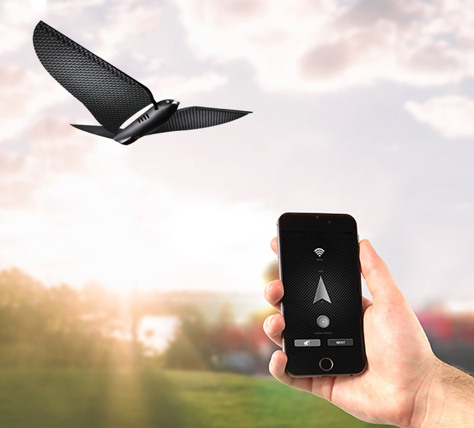

Het hoorcollege artificial creatures werd gegeven door Chris Heydra. Chris vroeg ons wie van ons verwacht dat artificial creatures de wereld over zouden nemen wanneer er een oorlog zou uitbreken. In het assignment ga ik het homeostatisch model uitleggen en pas ik het toe op een printer. Hierna heb ik onderzoek gedaan naar andere voorbeelden van artificial creatures en heb ik gereflecteerd op dit onderwerp.
Assignment
Artificial Creatures zijn wezens die taken uitvoeren en op input reageren waar normaal gesproken menselijke intelligentie voor nodig is. Artificial Creatures zijn zo geprogrammeerd dat ze patronen kunnen herkennen en dit maakt dat ze kunnen reageren op input en hierop kunnen reageren of dingen voorspellen.
Het homeostatische proces is het proces in een organisme wat zorgt voor stabiele evenwicht tussen verschillende behoeftes. Voor de trouwe sims spelers onder ons; Het zijn dus de balkjes die de behoeftes van je sim, met een simpele ‘cmd shift C’ en
Research

Reflection
Ik vond het hoorcollege interessant en de voorbeelden die zijn gegeven waren erg interessant maar dit klinkt allemaal nog erg ver weg omdat ik nog nooit met zo iets te maken heb gehad. Ik vind het dan ook lastig om in te denken dat een robotstofzuiger eigenlijk ook een artificial creature is en dat maakt het onderwerp voor mij wat minder aantrekkelijk. Ik denk dat artificial creatures zich nog in een beginstadium bevinden en dat er veel ontwikkelingen zullen komen rondom dit onderwerp. Wanneer dit echt op gang gaat komen, en het zichtbaarder wordt voor de ‘gewone mens’, denk ik dat een groot gedeelte van de maatschappij zich hier angstig over zal uiten, en zelfs van mening zal zijn dat artificial creatures verboden zouden moeten zijn. Wat ik het meest interessante vond van dit onderwerp is hoe artificial creatures worden ingezet bij eenzaamheid zoals het bij PARO.
SAR Assignment